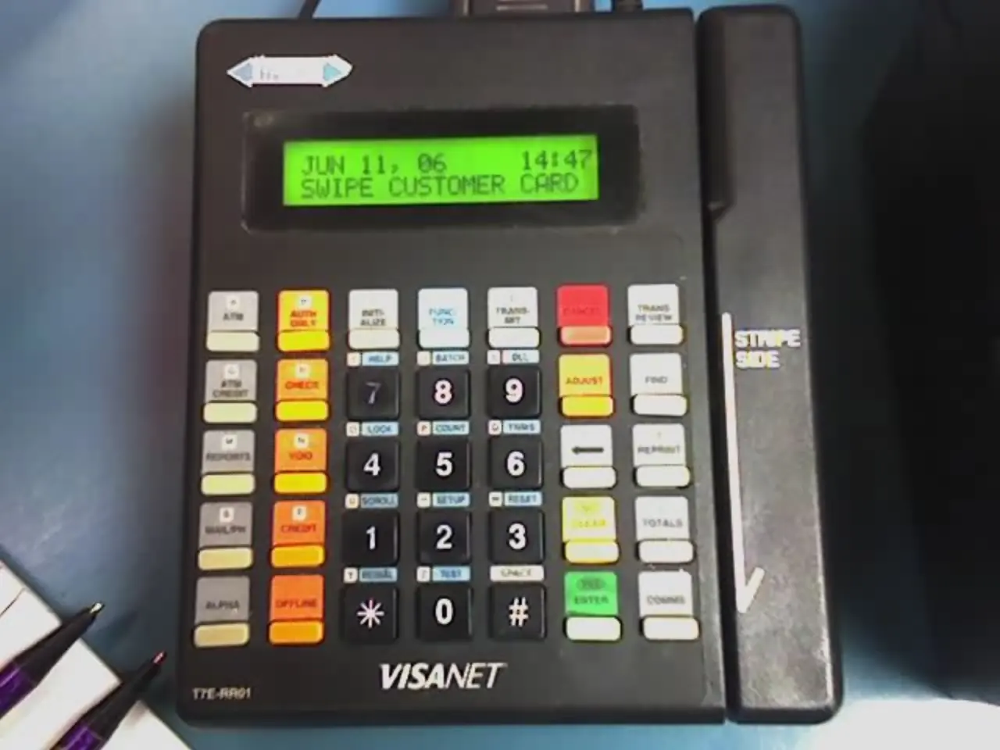

소비가 강하다는 말은 매출이 아직 버틴다는 뜻일 수 있습니다. 하지만 소비자가 어떤 방식으로 돈을 쓰고 있는지를 보면 다른 그림이 보입니다. 현금으로 바로 결제하는 소비와 신용카드, 할부, 후불결제로 밀어 넣는 소비는 같은 매출로 기록되어도 가계의 체력은 다르게 말해 줍니다. 최근 가계 신용을 볼 때 중요한 질문은 “얼마나 샀나”보다 “그 소비를 어떤 돈으로 버티고 있나”입니다.
후불결제는 편리한 도구입니다. 월급일과 결제일 사이의 간격을 메우고, 큰 지출을 작은 금액으로 나눠 보이게 만듭니다. 문제는 이 편의가 여러 앱과 카드, 소액 할부로 흩어질 때 전체 부채 규모가 잘 보이지 않는다는 점입니다. 소비자는 한 번에 큰 빚을 진다고 느끼지 않지만, 결제일이 겹치기 시작하면 현금흐름이 갑자기 빡빡해집니다.
경제를 읽는 입장에서는 후불결제와 카드 연체를 단순한 개인 습관으로만 볼 수 없습니다. 이것은 고용, 임금, 물가, 금리, 임대료가 한 가계 안에서 부딪히는 자리입니다. 소득이 빠르게 늘지 않는 상황에서 생활비가 높은 수준에 머물면, 소비자는 지출을 바로 줄이기보다 결제 시점을 뒤로 미룹니다. 그래서 연체는 소비 둔화가 공식 통계에 또렷하게 잡히기 전에 나타나는 생활 신호가 될 수 있습니다.
매출은 버티지만 지갑은 얇아집니다

소매 매출이 아직 괜찮아 보여도 그 안에는 다른 층이 섞여 있습니다. 필요한 물건을 사는 소비, 가격 인상 때문에 금액만 커진 소비, 할인 행사를 따라 앞당긴 소비, 신용으로 미룬 소비가 모두 같은 매출 숫자로 들어갑니다. 그래서 소비 경기를 판단할 때 매출 증가율만 보면 늦습니다. 결제 수단과 연체율, 최소 결제 비중, 카드 잔액 증가 속도를 함께 봐야 합니다.
후불결제의 특징은 부담을 작게 쪼갠다는 데 있습니다. 10만 원 지출도 4번으로 나누면 당장 2만5천 원처럼 보입니다. 이 구조는 소비를 부드럽게 만들지만, 여러 결제가 동시에 쌓이면 다음 달 현금흐름을 잠식합니다. 특히 식료품, 외식, 생활용품처럼 반복 지출에 후불결제가 섞이면 위험 신호가 더 커집니다. 원래는 한 번에 정리되어야 할 생활비가 다음 달 소득을 먼저 가져가기 때문입니다.
카드 연체가 조금씩 늘어나는 시기에는 소비자가 바로 소비를 멈추지 않습니다. 먼저 더 싼 브랜드로 옮기고, 외식 횟수를 줄이고, 정기구독을 정리하고, 큰 지출을 늦춥니다. 기업 입장에서는 객단가와 방문 빈도, 할인 의존도가 먼저 흔들립니다. 경제 전체로는 소비가 갑자기 꺾이는 대신 여러 업종의 마진이 동시에 얇아지는 모습으로 나타날 수 있습니다.
소액 할부가 위험한 이유
큰 대출은 눈에 잘 띕니다. 주택담보대출이나 자동차 할부는 금액도 크고 계약도 분명합니다. 반대로 소액 후불결제는 작은 약속이 여러 곳에 흩어집니다. 소비자는 각 결제의 부담을 따로 보지만, 월말에는 같은 통장에서 빠져나갑니다. 그래서 소액 할부가 늘어날수록 가계는 전체 부채를 과소평가하기 쉽습니다.
후불결제는 신용카드보다 심리적 진입 장벽이 낮을 때가 많습니다. 결제 화면에서 선택지가 바로 보이고, 승인 과정이 짧고, “무이자”라는 표현이 부담을 낮춥니다. 그러나 무이자라고 해서 비용이 사라지는 것은 아닙니다. 결제일을 놓치면 수수료가 붙고, 다른 카드 대금과 겹치면 현금서비스나 리볼빙 같은 더 비싼 선택으로 밀릴 수 있습니다.
소득이 안정적인 사람에게 후불결제는 단순한 결제 편의일 수 있습니다. 하지만 임시직, 프리랜서, 초과근무 수당에 의존하는 가계에는 결제일 불일치가 큰 부담이 됩니다. 이번 달 수입이 예상보다 적으면 작은 할부들이 한꺼번에 압박으로 바뀝니다. 따라서 후불결제 확대는 젊은 소비층의 구매력만 보여주는 것이 아니라, 소득 변동성이 큰 계층의 부담도 함께 드러냅니다.
기업 실적은 어디서 먼저 흔들리나
소비자 신용이 빡빡해지면 모든 기업이 같은 속도로 흔들리지는 않습니다. 필수재 기업은 판매량을 방어할 수 있지만 가격 인상 여력이 줄어듭니다. 외식, 의류, 여행, 전자제품처럼 선택 소비 비중이 큰 업종은 방문 빈도와 객단가가 먼저 약해질 수 있습니다. 후불결제가 많이 쓰이는 플랫폼은 거래액이 유지되어도 대손 비용과 환불, 고객 이탈을 함께 봐야 합니다.
금융회사와 핀테크 기업은 승인율을 조절하면서 위험을 관리합니다. 신용이 좋은 고객에게는 한도를 유지하고, 위험 고객에게는 한도를 낮추거나 수수료를 높입니다. 이 과정에서 소비는 더 분절됩니다. 괜찮은 고객은 계속 쓰고, 취약한 고객은 갑자기 결제 선택지가 줄어듭니다. 그래서 평균 소비 지표보다 하위 신용층의 연체와 한도 축소가 더 빠른 경고음이 될 수 있습니다.
투자자가 기업을 볼 때도 매출 성장과 함께 매출채권, 대손충당금, 고객 확보 비용을 살펴야 합니다. 특히 후불결제나 신용 판매에 기대어 성장하는 기업은 거래액이 늘어도 현금이 늦게 들어오거나 회수되지 않을 수 있습니다. 성장이 좋은지 보려면 “얼마나 팔았나”와 “얼마나 회수했나”를 나눠 봐야 합니다.
소비 둔화는 연체표에서 먼저 보입니다
특히 이 지표는 소비자가 느끼는 체감 경기와 기업이 보는 매출 사이의 간격을 설명해 줍니다. 매장은 여전히 붐비는데 결제 방식이 신용 쪽으로 기울고 있다면, 겉으로 보이는 수요보다 내부의 여력은 약할 수 있습니다. 그래서 정책 당국과 기업은 단순한 소비 금액보다 연체 전 단계의 신호를 더 세밀하게 봐야 합니다.
관련 영상
햄버거 하나에 6주 할부? 카드빚에 갇힌 미국
경기 침체를 예측하는 일은 어렵습니다. 하지만 가계의 결제 습관은 생각보다 솔직합니다. 생활비가 부담스러워질수록 소비자는 결제를 미루고, 미룬 결제가 겹치면 연체가 생기고, 연체가 늘면 금융회사는 한도를 줄입니다. 그다음에야 소비 지출 통계와 기업 실적이 더 분명하게 약해집니다.
그래서 후불결제와 카드 연체를 볼 때는 겁을 먹기보다 순서를 읽는 편이 좋습니다. 첫째, 잔액이 얼마나 빠르게 늘어나는지 봐야 합니다. 둘째, 연체가 특정 계층에만 머무는지 넓어지는지 봐야 합니다. 셋째, 소비 기업이 할인으로 매출을 지키는지 정상 가격으로도 수요가 유지되는지 봐야 합니다. 넷째, 금융회사가 한도를 줄이고 승인 기준을 조이는지 확인해야 합니다.
소비는 갑자기 멈추기보다 먼저 숨이 찹니다. 후불결제와 카드 연체는 그 숨소리를 들을 수 있는 지표입니다. 숫자가 조금 올라갔다고 바로 위기라고 단정할 필요는 없지만, 생활비를 신용으로 밀어내는 시간이 길어질수록 다음 분기의 소비 여력은 줄어듭니다. 소비 경기를 읽는 기준은 매출의 크기에서 상환의 지속성으로 옮겨가고 있습니다.